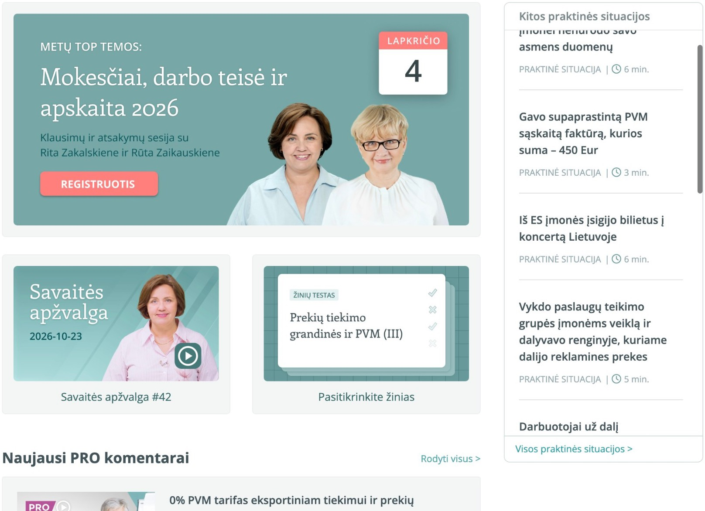

Pagal jūsų paiešką aktualiausia:
SkaičiuoklėDienpinigių skaičiuoklė
Atidaryti visą ↗
ŠalisNormaDienosSuma
Bendra dienpinigių suma
Normos pavyzdinės, tik prototipui. Tikros normos SUFLERIO skaičiuoklėje.
Taip pat gali praversti
Ieškoma rezultatų…
Ieškoma rezultatų…
Esu DI, tai kaip žinot, galiu suklysti, todėl pasitikrinkit dar papildomai šaltiniuose :]
Užduokit klausimą ekspertui, jis atsakys asmeniškai.
Tęskit temą
Pasirinkit kryptį, ieškosim konkrečiau
Arba ieškokit plačiau
Tiksliai panašių situacijų neradom.
Nieko nerasta